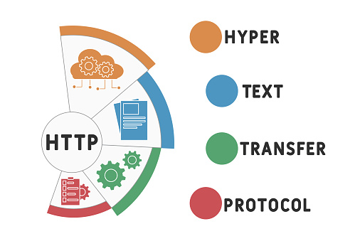
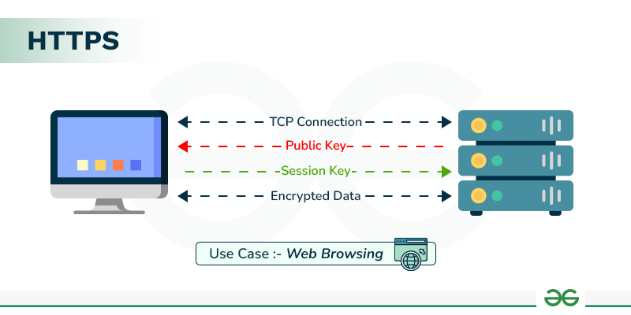
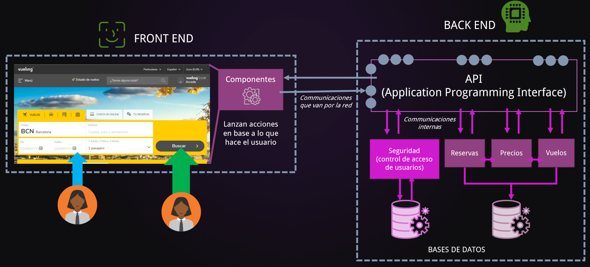

Conceptos Basicos
- Sitio Web
- - Un Sitio Web en un conjunto de páginas interconectadas alojadas en un dominio especifico a tráves de internet. Estan permiten mostrar infromación, vender productos, ofrecer servicios, etc. Es decir, sirven como plataforma para que tener presencia en linea y poder alcanzar una audiencia global para proporcionarle información de interés sobre sus actividades, productos o servicios.
- Página Web
- - Una página web es un documento de carácter multimediático, es decir, capaz de incluir audio, video, texto y sus combinaciones, que presenta su información de manera organizada y se encuentra alijado en internet. Se trata del formato básico de contenidos de la World Wide Web (www).
- Hipervínculo
- - Un hipervínculo/enlace es un elemente fundamental de la web que permite conectar documentos o secciones de un documento mediante una URL. Fue introducido como parte de los tres pilares de la web por Tim Berners, los cuales son, URL, HTTP y HTML. Su propocito principal es facilitar la nevegacion entre páginas web o dentro un mismo documento.
- URL
- - Una URL (Uniform Resource Locator) es la direccion única que identifica un recurso en la Web, como una página HTML, una imagen, un archivo CSS o un video. En teoría, cada URL válida apunta a un único recurso, aunque es la práctica puede que el recurso ya no exista o haya sido movido.
- HTML
- - HTML (Hyper Text Markup Language) es un lenguaje de marcado utilizado para estructurar y presentar contenido en páginas web. No es un lenguaje de programación, ya que no permite realizar cálculos ni ejecutar lógica, sino que define la estructura de los elementos mediante etiquetas. Estas etiquetas indican al navegador cómo debe interpretar y mostrar el contenido al usuario.
- CSS
- - CSS (Hojas de Estilo en Cascada) es un lenguaje utilizado para definir la presentación visual y el diseño de una página web. Funciona junto con HTML, que estructura el contenido de una página web, para controlar cómo aparecen elementos como texto, imágenes y maquetaciones en diferentes dispositivos y pantallas. CSS permite aplicar estilos como color, fuentes, espaciado y animaciones a elementos HTML, asegurandp un diseño coherente y visualemnte atractivo.
- JS (JavaScript)
- - JavaScript es un lenguaje de programación interpretado que permite dotar a las páginas web de interactividad y dinamismo. Forma parte del trío fundamental del desarrollo web junto a HTML y CSS. JavaScript controla en comportamiento, permitiendo desde actualizaciones dinámicas de contenido hasta animaciones, control multimedia y comunicación con servidores.
- DNS
- - Un DNS (Domain Name System/Sistema de Nombres de Dominio) se trata de un método de denominación empleado para nombrar a los dispositivos que se conectan a un red a trávez del IP (Internet Protocol). El DNS se encarga de vincular informaciones asociadas al nombre de dominio que se le asigna a cada equipo. De esta forma, hace que los identificadores binarios relacionados con los equipos adquieran nombres que resultan inteligibles para los seres humanos, facilitando su localizacion en la red.
- IP
- - Una dirección IP es una dirección única que identifica a un dispositivo en Internet o en una red local. IP significa "protolo de internet" o "Internet Protocol", que es el conjunto de reglas que rigen el formato de los datos enviados a través de internet o la red local. Una IP es una cadena de números separados por puntos, cada número puede variar de 0 a 255 por lo tanto el rango completo de direcciones IP va desde 0.0.0.0 hasta 255.255.255.255.
- Dominio Web
- - Un dominio web es el nombre único que identifica a un sitio web. Es la dirección que las personas escriben en su navegador para acceder a una página web. Sustituye a la dirección IP, permitiendo que un navegador traduzca esas palabras a una direccion IP mediante el DNS y llegar al sitio correcto.
- Cliente-servidor
- - Es un modelo o arquiectura dentro de la informática que describe cómo se organizan y comunican los sistemas en una red. Existen los dos componentes principales: el cliente y el servidor. El cliente es el programa o dispositivo que realiza solicitudes de información o servicios, por ejemplo, un navegador web que usas para entrar a una página. El servidor es el sistema que recibe esas solicitudes, las procesa y responde enviando los datos o el servicio solicitado.
- FTP
- - FTP significa File Transfer Protocol, el cual es un protocolo utilizado para la transferencia de archivos entre sistemas conectados a una red TCP/IP. FTP permite la comunicación entre un cliente y un servidor, permitiendo la carga y descarga de archivos de manera eficiente, independientemente del sistema operativo que se utilice.
- HTTP
- - HTTP sifnifica "HyperTEXT Transfer Protocol". Es un protocolo utlizado en la World Wide Web que define cómo se formatean y transmiten los mensajes entre los servidores web y los navegadores. Este protocolo permite la comunicación y la transferencia de información en Internet, facilitando la interacción entre el cliete y el servidor.
- HTTPS
- - HTTPS es la versión segura de HTTP, el protocolo utlizado para transferir datos entre un navegador web y un sitio web. HTTPS garantiza que esta transferencia de datos esté cifrada, proporcionando una capa de seguridad especialmente crítica al manipular información sensible como credenciales de acceso, datos bancarios o historiales médicos. HTTPS utiliza protocolos de cifrado como TLS (Transport Layer Security) o su predesor SSL (Secure Sockets Layer) para asegurar las comunicaciónes. Se basa en un sistema de claves públicas y privadas.
- Frontend
- - Frontend es la parte visible de un sitio web o aplicación con la que los usuario interactúan directamente. Representa la interfaz gráfica que se ejecuta en el navegador del usuario y se encarga de mostrar elementos como el diseño, los colores, los botones y las animaciones. Basicamente es la "cara" del sitio web, diseñada para ofrecer una experiencia visual e interactiva.
- Backend
- - Backend es la parte de un sistema o aplicación que se encarga de procesar o almacenar datos. Es la parte invisible para el usuario final, pero es esencial para el funcionamiento de cualquier plataforma digital. El Backend gestiona la lógica de negocio, la base de datos y la comunicación con el Frontend, asegurando un correcto funcionamiento y una experiencia fluida para los usuarios.
- Hosting
- - Hosting es un servisio de alojamiento web que permite almacenar y acceder a contenido en línea. Al contratar un servicio de hosting, estas alquilando espacio en un servidor donde se almacenan todos los archivos y datos de tu sitio web, asegurando que esté disponible para los usuarios en cualquier momento.
- Hosting Privado Virtual (VPS)
- - El Hosting Privado Virtual (VPS) es un tipo de alojamiento web que utiliza tecnología de virtualización para dividir un servidor físico en varios servidores virtuales. Cada uno de estos servidores actúa como un servidor privado independiente, con su propio sistema operativo, recursos dedicados y almacenamiento, lo que permite un mayor control y personalización en comparación con el alojamiento compartido.
- Hosting en la nube (Cloud Hosting)
- - El Cloud Hosting es un tipo de servicio de alojamiento web que utiliza servidores virtuales para alojar sitios web y aplicaciones. A diferencia de un alojamiento tradicional, el Cloud Hosting permite distribuir la carga de trabajo entre múltiples servidores, lo que mejora la escalabilidad, fiabilidad y rendimiento. Además, ofrece flexibilidad y reducción de costos, ya que se pagan por los recursos utilizados y no por un paquete fijo.s
- W3C
- - El W3C (World Wide Web Consortium) es una organización internacional fundada en 1994 por Tim Berners-Lee, creador de la web. Su misión principal es desarrollar estándares y protocolos abiertos (como HTML, CSS, XML) para asegurar el crecimiento, la accesibilidad, la seguridad y la interoperabilidad de la World Wide Web a largo plazo.
.jpg)
.jpg)
.jpg)



